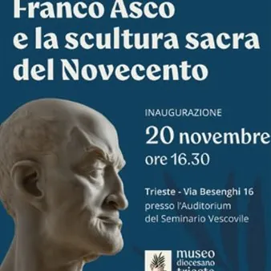

da ven 20 nov a dom 31 ott
Mostra: Franco Asco e la scultura sacra del Novecento
l Museo Diocesano di Trieste inaugura la mostra ‘Franco Asco e la scultura sacra del Novecento’. Al centro c’è l’Ultima cena che Franco Asco scolpì tra il 1948 e il 1953: dodici teste di apostoli in marmo di Carrara attorno al busto di Cristo. Nelle altre sale sono esposte…
 Indicazioni
Indicazioni
- Costi e prenotazioni
- Costo non indicato · Prenotazione non indicata
- Programma
- Programma da verificare. Apri la fonte ufficiale per orari e possibili aggiornamenti.
- In caso di maltempo
- Nessuna indicazione specifica pubblicata.
- Note
- Acquisito automaticamente dalla fonte.
L’EVENTO
Descrizione completa
l Museo Diocesano di Trieste inaugura la mostra ‘Franco Asco e la scultura sacra del Novecento’.
Al centro c’è l’Ultima cena che Franco Asco scolpì tra il 1948 e il 1953: dodici teste di apostoli in marmo di Carrara attorno al busto di Cristo. Nelle altre sale sono esposte sculture di artisti che nel Novecento hanno dato forma al sacro, a Trieste e in Italia.
In mostra: Tristano Alberti, Franco Asco, Floriano Bodini, Ugo Carà, Pietro Giampaoli, Angelo Grilli, Enrico Manfrini, Marcello Mascherini, Francesco Messina, Aurelio Mistruzzi, Publio Morbiducci, Mario Moschi, Giuseppe Negrisin, Mario Rudelli, Carlo Sbisà, Nino (Giovanni) Spagnoli
La mostra è visitabile lunedì, mercoledì e venerdì dalle 10.00 alle 12.00
Ingresso gratuito
IL PROGRAMMA
Programma e orari
Appuntamenti raccolti dalle fonti elencate. Dove manca un orario, non è ancora disponibile in questa scheda.
Programma pubblicato
- Dal 2026-11-20 al 2027-10-31
INFORMAZIONI UTILI
Prima di partire
- Controllare la fonte prima di partire.
ORGANIZZAZIONE